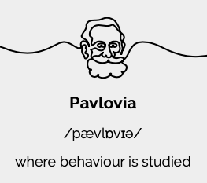
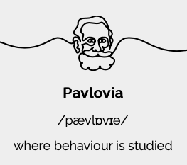

开源软件和R语言
开源软件
概述
如果您想进行开放且可重复的研究，您应该在工作流程中使用开源软件。使用专有软件进行的研究不能轻易被其他人复制。
开源软件是被许可可以自由修改、重新混合和改进的软件。它通常是免费使用的，并以开放交流、协作参与、快速原型制作、透明度、精英管理和面向社区的开发等原则为中心。开源运动始于 20 世纪 80 年代初，部分原因是打印机的出现，并在该十年以Richard Stallman建立的自由软件基金会的形式进一步发展。20 世纪 90 年代末，开源倡议发起，旨在提高人们对开源软件的认识和采用，并在开源实践社区之间架起桥梁。
开源软件由许多人制作，并在符合 OSD 的许可证下分发，该许可证授予以修改和未修改的形式使用、研究、更改和共享该软件的所有权利。软件自由对于实现开源软件的社区开发至关重要。
有大量可用的开源软件 - 您会发现其中一些不仅在本单元的背景下有用，而且在您如何学习以及如何进行研究的背景下也很有用。
这里是一个有趣的 CNBC 视频（Youtube平台），讨论了开源软件的兴起 - 它最后提到需要以开放的方式合作应对环境、癌症和阿尔茨海默病等全球挑战。
统计与科学计算
R 与 RStudio Desktop
不言而喻，R 和 RStudio Desktop 是与本课程相关的开源软件的两个最明显的示例。就用于数据分析和统计建模的其他开源语言而言，您可能还对 Python 和 Julia 感兴趣。

文档创建
到目前为止，您可能主要使用 Microsoft Word 来编写文档。LibreOffice是一个与 Microsoft Office 套件相当的优秀开源软件，提供了大量用于文档编写、处理电子表格和创建演示文稿的应用程序。

如果您有兴趣使用Markdown进行写作（这确实很容易掌握），您可能会对使用HackMD感兴趣。HackMD 是一款 Markdown 编辑器，可让您与他人一起编写协作文档和演示文稿。

构建实验
PsychoPy提供了一个出色的开源解决方案来构建收集人类数据的实验，并且通过配套托管网站Pavlovia提供了一种易于使用的方法来在线运行 PsychoPy 实验。PsychoPy 已经存在很多年了，并且有许多预先构建的实验模板，您可以根据需要进行调整。这里有一个很好的参考资料描述了 PsychoPy 环境。
 



笔者注：这里指原文的作者Prof. Andrew Stewart。可以看得出他确实是一名开源软件的爱好者，当在课上谈起Linux时，他讲了许多并十分推荐我们尝试Linux，并且眼睛似乎都在放光 ↩︎